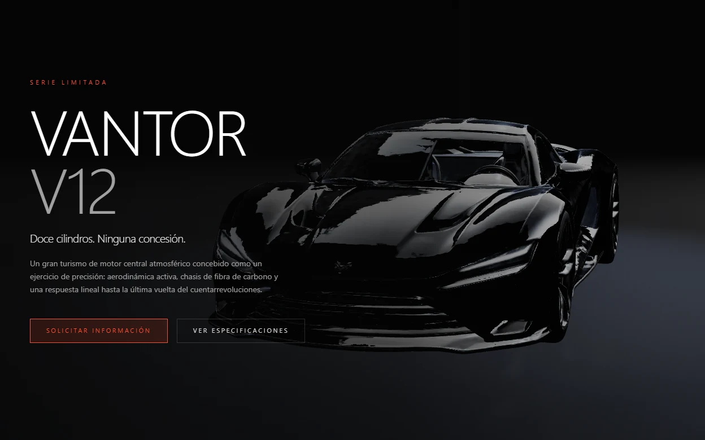

Proyecto destacado
Vantor V12
Web conceptual de automoción con un coche deportivo V12 en 3D cuya cámara se anima con el scroll. Es un proyecto ficticio de portfolio: producto, cifras y contacto no son reales.
- Escena 3D con cámara controlada por el scroll
- Secciones: Diseño, Prestaciones, Especificaciones, Detalles y Contacto
- Formulario de contacto simulado (no envía ni guarda datos)
- Modo debug con paneles de ajuste de cámara, luces y coche (
?debug=1) - Modelo 3D generado con Tripo AI a partir de una imagen creada con Gemini
Next.js 16ReactTypeScriptThree.jsReact Three Fiberdreizustand